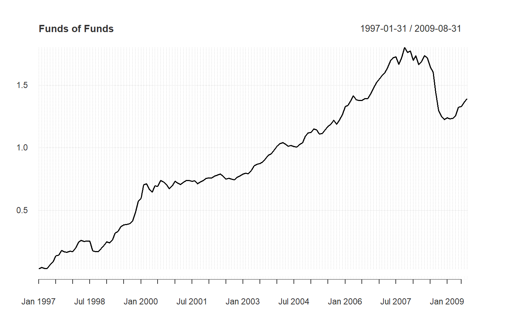

Draws a line chart and labels the x-axis with the appropriate dates. This
is really a "primitive", since it extends the base plot and
standardizes the elements of a chart. Adds attributes for shading areas of
the timeline or aligning vertical lines along the timeline. This function is
intended to be used inside other charting functions.
chart.TimeSeries(R, ..., auto.grid = TRUE, xaxis = TRUE, yaxis = TRUE, yaxis.right = FALSE, type = "l", lty = 1, lwd = 2, las = par("las"), main = NULL, ylab = NULL, xlab = "", date.format.in = "%Y-%m-%d", date.format = NULL, xlim = NULL, ylim = NULL, element.color = "darkgray", event.lines = NULL, event.labels = NULL, period.areas = NULL, event.color = "darkgray", period.color = "aliceblue", colorset = (1:12), pch = (1:12), legend.loc = NULL, ylog = FALSE, cex.axis = 0.8, cex.legend = 0.8, cex.lab = 1, cex.labels = 0.8, cex.main = 1, major.ticks = "auto", minor.ticks = TRUE, grid.color = "lightgray", grid.lty = "dotted", xaxis.labels = NULL, dygraphPlot = FALSE, yaxis.pct = FALSE) chart.TimeSeries.base(R, auto.grid = TRUE, xaxis = TRUE, yaxis = TRUE, yaxis.right = FALSE, type = "l", lty = 1, lwd = 2, las = par("las"), main = NULL, ylab = NULL, xlab = "", date.format.in = "%Y-%m-%d", date.format = NULL, xlim = NULL, ylim = NULL, element.color = "darkgray", event.lines = NULL, event.labels = NULL, period.areas = NULL, event.color = "darkgray", period.color = "aliceblue", colorset = (1:12), pch = (1:12), legend.loc = NULL, ylog = FALSE, cex.axis = 0.8, cex.legend = 0.8, cex.lab = 1, cex.labels = 0.8, cex.main = 1, major.ticks = "auto", minor.ticks = TRUE, grid.color = "lightgray", grid.lty = "dotted", xaxis.labels = NULL, yaxis.pct = FALSE, ...) charts.TimeSeries(R, space = 0, main = "Returns", ...)
| R | an xts, vector, matrix, data frame, timeSeries or zoo object of asset returns |
|---|---|
| … | any other passthru parameters |
| auto.grid | if true, draws a grid aligned with the points on the x and y axes |
| xaxis | if true, draws the x axis |
| yaxis | if true, draws the y axis |
| yaxis.right | if true, draws the y axis on the right-hand side of the plot |
| type | set the chart type, same as in |
| lty | set the line type, same as in |
| lwd | set the line width, same as in |
| las | set the axis label rotation, same as in |
| main | set the chart title, same as in |
| ylab | set the y-axis label, same as in |
| xlab | set the x-axis label, same as in |
| date.format.in | allows specification of other date formats in the data object, defaults to "%Y-%m-%d" |
| date.format | re-format the dates for the xaxis; the default is "%m/%y" |
| xlim | set the x-axis limit, same as in |
| ylim | set the y-axis limit, same as in |
| element.color | provides the color for drawing chart elements, such as the box lines, axis lines, etc. Default is "darkgray" |
| event.lines | if not null, vertical lines will be drawn to indicate
that an event happened during that time period. |
| event.labels | if not null and event.lines is not null, this will apply
a list of text labels (e.g., |
| period.areas | these are shaded areas described by start and end dates
in a vector of xts date rangees, e.g.,
|
| event.color | draws the event described in |
| period.color | draws the shaded region described by |
| colorset | color palette to use, set by default to rational choices |
| pch | symbols to use, see also |
| legend.loc | places a legend into one of nine locations on the chart: bottomright, bottom, bottomleft, left, topleft, top, topright, right, or center. |
| ylog | TRUE/FALSE set the y-axis to logarithmic scale, similar to
|
| cex.axis | The magnification to be used for axis annotation relative to
the current setting of 'cex', same as in |
| cex.legend | The magnification to be used for sizing the legend relative to the current setting of 'cex'. |
| cex.lab | The magnification to be used for x- and y-axis labels relative to the current setting of 'cex'. |
| cex.labels | The magnification to be used for event line labels relative to the current setting of 'cex'. |
| cex.main | The magnification to be used for the chart title relative to the current setting of 'cex'. |
| major.ticks | Should major tickmarks be drawn and labeled, default 'auto' |
| minor.ticks | Should minor tickmarks be drawn, default TRUE |
| grid.color | sets the color for the reference grid |
| grid.lty | defines the line type for the grid |
| xaxis.labels | Allows for non-date labeling of date axes, default is NULL |
| dygraphPlot | Plot using dygraphs default FALSE |
| yaxis.pct | if TRUE, scales the y axis labels by 100 |
| space | default 0 |
plot, par,
axTicksByTime
# These are start and end dates, formatted as xts ranges. ## http://www.nber.org-cycles.html cycles.dates<-c("1857-06/1858-12", "1860-10/1861-06", "1865-04/1867-12", "1869-06/1870-12", "1873-10/1879-03", "1882-03/1885-05", "1887-03/1888-04", "1890-07/1891-05", "1893-01/1894-06", "1895-12/1897-06", "1899-06/1900-12", "1902-09/1904-08", "1907-05/1908-06", "1910-01/1912-01", "1913-01/1914-12", "1918-08/1919-03", "1920-01/1921-07", "1923-05/1924-07", "1926-10/1927-11", "1929-08/1933-03", "1937-05/1938-06", "1945-02/1945-10", "1948-11/1949-10", "1953-07/1954-05", "1957-08/1958-04", "1960-04/1961-02", "1969-12/1970-11", "1973-11/1975-03", "1980-01/1980-07", "1981-07/1982-11", "1990-07/1991-03", "2001-03/2001-11", "2007-12/2009-06" ) # Event lists - FOR BEST RESULTS, KEEP THESE DATES IN ORDER risk.dates = c( "Oct 87", "Feb 94", "Jul 97", "Aug 98", "Oct 98", "Jul 00", "Sep 01") risk.labels = c( "Black Monday", "Bond Crash", "Asian Crisis", "Russian Crisis", "LTCM", "Tech Bubble", "Sept 11") data(edhec) R=edhec[,"Funds of Funds",drop=FALSE] Return.cumulative = cumprod(1+R) - 1 chart.TimeSeries(Return.cumulative)chart.TimeSeries(Return.cumulative, colorset = "darkblue", legend.loc = "bottomright", period.areas = cycles.dates, period.color = rgb(204/255, 204/255, 204/255, alpha=0.25), event.lines = risk.dates, event.labels = risk.labels, event.color = "red", lwd = 2)